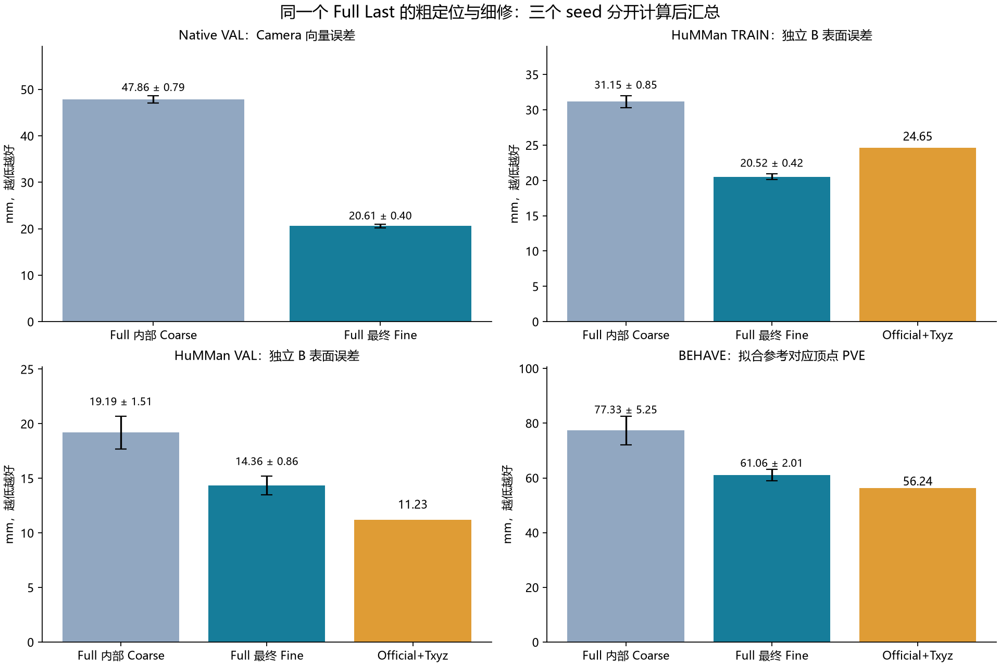
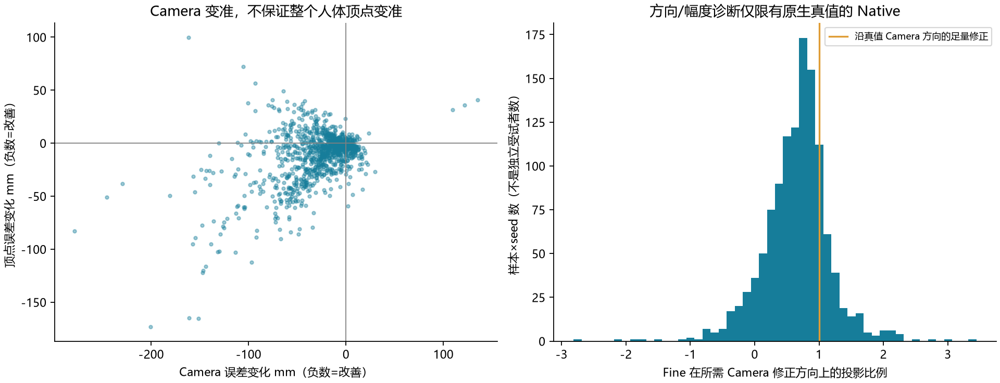
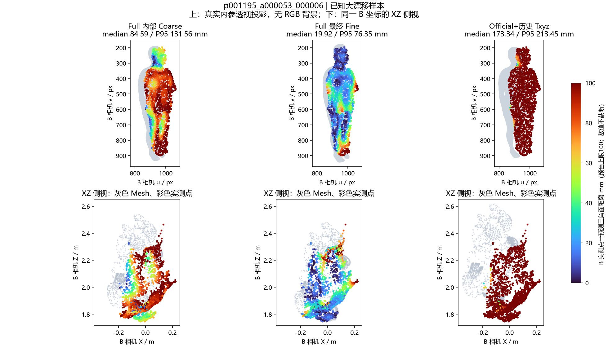
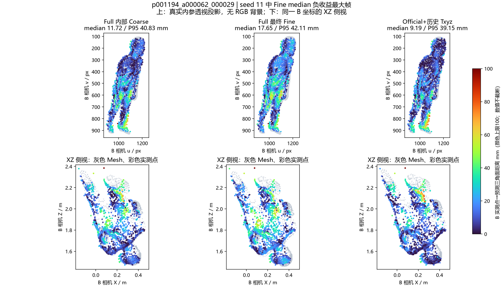
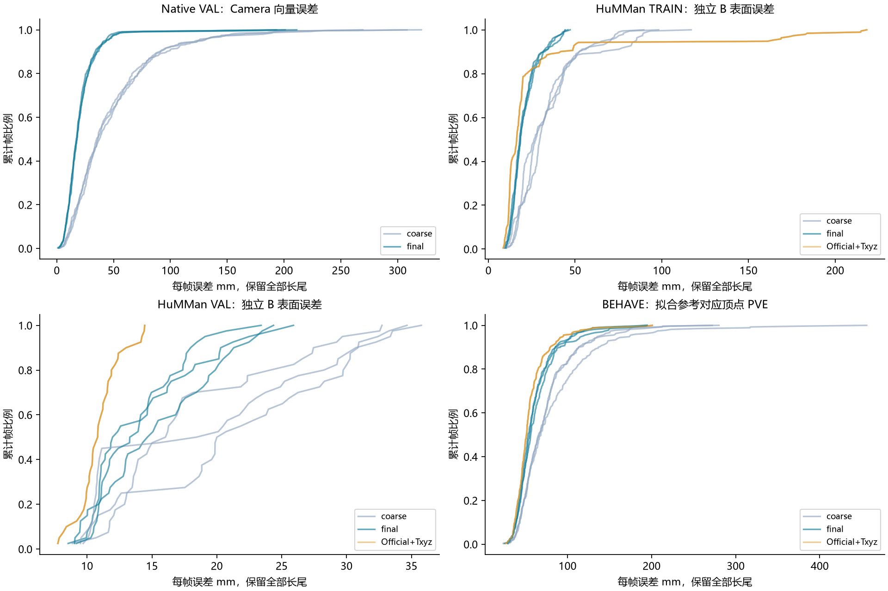

R5 离线诊断：Fine 在帮忙，但还不是全部答案
已完成 2,706 条同模型 Coarse/Fine 对照、232 帧 A-only 旋转对照，以及 400 帧原生 MHR 参数替换。没有训练新模型。完整 GPU 耗时按你的要求暂缓。
先说结论保留 Camera/Body 硬解耦，也保留 Fine。它在三份数据上总体有效；问题不是简单的“Fine 没起作用”。但部分更新方向错误、部分样本改坏，真实数据仍未全面超过 Official+Txyz。现在没有证据支持直接上多步展开或复杂旋转网络。
1. 三份数据分别看，毫米数不混在一起
| 数据 / 误差含义 | 同一 Full 的内部 Coarse | Full 最终 Fine | Official+历史 Txyz |
|---|
| Native VAL / Camera 向量误差 | 47.86 ± 0.79 | 20.61 ± 0.40 | — |
| HuMMan TRAIN / 独立 B 表面误差 | 31.15 ± 0.85 | 20.52 ± 0.42 | 24.65（固定参考） |
| HuMMan VAL / 独立 B 表面误差 | 19.19 ± 1.51 | 14.36 ± 0.86 | 11.23（固定参考） |
| BEHAVE / 拟合参考对应顶点 PVE | 77.33 ± 5.25 | 61.06 ± 2.01 | 56.24 ± 0.00 |
Full 表中是三个训练 seed 的均值 ± 样本标准差。HuMMan Official+Txyz 是原单一共享缓存的固定参考，并非三次独立推理；BEHAVE Official 有原有三 seed 输出，其微小差异四舍五入为 0.00。Native 是相机平移向量到原生真值的距离；HuMMan 是固定 Camera B 的观测点到预测三角面的单向距离；BEHAVE 是固定映射后对应顶点到拟合参考的平均距离。它们不是同一种误差。

2. Fine 具体做了什么
Native 的 Camera 误差平均从约 47.86 降到 20.61 mm；HuMMan VAL 从约 19.19 降到 14.36 mm；BEHAVE PVE 从约 77.33 降到 61.06 mm。这里比较的始终是同一个 Full Last，不是另一个单独训练的 Coarse 模型。
| 数据 | 角色 | seed | Coarse mm | Final mm | 改善帧 / 变差帧 | Fine 位移中位 mm |
|---|
| native | VAL | 11 | 48.262 | 20.923 | 333 / 67 | 29.05 |
| native | VAL | 23 | 46.944 | 20.158 | 332 / 68 | 29.10 |
| native | VAL | 37 | 48.365 | 20.748 | 328 / 72 | 26.90 |
| real | TRAIN | 11 | 32.056 | 20.056 | 178 / 14 | 29.58 |
| real | TRAIN | 23 | 31.030 | 20.659 | 181 / 11 | 36.12 |
| real | TRAIN | 37 | 30.358 | 20.858 | 156 / 36 | 32.38 |
| real | VAL | 11 | 18.317 | 13.479 | 35 / 5 | 14.90 |
| real | VAL | 23 | 20.930 | 15.196 | 35 / 5 | 21.82 |
| real | VAL | 37 | 18.322 | 14.402 | 26 / 14 | 16.23 |
| behave | 已消费 TEST 子集 | 11 | 74.417 | 60.568 | 222 / 48 | 26.45 |
| behave | 已消费 TEST 子集 | 23 | 74.177 | 59.346 | 229 / 41 | 25.38 |
| behave | 已消费 TEST 子集 | 37 | 83.383 | 63.277 | 227 / 43 | 23.66 |
Native 三个 seed 各有 29～40/400 帧的 Fine 与真值 Camera 所需修正方向相反；67～72/400 帧的 Camera 误差变大。沿真值方向的投影比例中位数约 0.69～0.72，同时还存在约 8～9 mm 的正交分量。有欠修正现象，但不能把它解释成“方向都对、只差多走几步”。
还有 95～102/400 帧出现“Camera 改善但顶点误差变大”。这说明模型位置误差与表面贴合误差确实可能冲突；Txyz 的表面分数更低，不等于它的物理 Camera 一定更真。Native 的最终顶点误差仍约 94.52 mm，去平移后约 76.24 mm，Camera-only 分支没有修复原有身体误差。

3. 已知失败人物：改善了多少，剩下多少
| 人物 | 角色 | seed | 表面 median mm：Coarse → Final | 表面 P95 mm：Coarse → Final |
|---|
| p001195 | TRAIN | 11 | 75.31 → 19.65 | 117.29 → 66.80 |
| p001195 | TRAIN | 23 | 57.45 → 17.13 | 100.26 → 62.87 |
| p001195 | TRAIN | 37 | 53.64 → 19.62 | 97.82 → 65.30 |
| p001196 | VAL | 11 | 28.12 → 17.69 | 71.55 → 50.15 |
| p001196 | VAL | 23 | 30.14 → 20.49 | 78.09 → 54.10 |
| p001196 | VAL | 37 | 30.53 → 19.75 | 77.09 → 52.20 |
没有删除 p001195 或任何坏帧。全部逐帧变化与负收益都保存在 完整索引。法线特征值、可见 Query 与增益的相关性另存于 FEATURE_ASSOCIATIONS.json，只是描述性线索，不能据此判定遮挡就是原因。


灰色为缓存 Mesh，彩色为实际 Camera B 点。上排使用真实 B 内参投影，下排明确是 XZ 正交侧视；没有把它们冒充原 RGB 叠图。颜色饱和上限 100 mm，实际误差不截断，图索引保留最大值。
4. 加旋转有用吗？有小幅平均收益，但不普遍
| 角色 | 方法 | 表面 median mm | 表面 P95 mm | ≤50mm 覆盖率 | fallback 帧 |
|---|
| TRAIN | official_txyz | 24.645 | 80.317 | 84.62% | 11 |
| TRAIN | matched_translation | 24.227 | 78.795 | 85.21% | 11 |
| TRAIN | matched_rigid | 22.709 | 76.318 | 86.16% | 11 |
| VAL | official_txyz | 11.226 | 41.604 | 97.07% | 0 |
| VAL | matched_translation | 11.122 | 41.855 | 97.04% | 0 |
| VAL | matched_rigid | 10.322 | 39.497 | 97.75% | 0 |
平移与刚体对照使用相同 A 点、16,384 anchors、六轮、80% 对应保留、固定尺度和相同总平移上限。为隔离旋转，新增的匹配平移使用均值更新，与 Kabsch 的平方距离目标配套；历史中位数 Txyz 原样保留，不能混称同一算法。
VAL 上，匹配平移 11.12 → 刚体 10.32 mm；40 帧中 26 帧改善、14 帧变差，四个人中三个改善、一个变差。TRAIN 上 24.23 → 22.71 mm，仍有 11 帧超限回退。这支持保留小型刚体工程对照，不足以单独支持重构 SE(3) 网络，也不能证明旋转无用。Camera B 没有参与拟合或参数选择。
5. 真值旋转替换为何不能叫“最优上限”
| Native VAL：固定 Official 身体其余参数 | 对应顶点误差 mm |
|---|
| Official 原始参数 | 157.121 |
| 仅换真值平移 | 100.227 |
| 仅换真值整体旋转 | 196.021 |
| 同时换真值旋转、平移 | 140.831 |
| Official 去质心后 | 76.236 |
| 换真值旋转后，再去质心 | 119.898 |
这是同一原生 MHR 的参数替换，使用 CPU 重新解码；没有手工把旋转重复乘在已旋转的顶点上。400 帧都核验了原输出复现、真值 Euler 与物理相机矩阵关系，以及替换前后的正确刚体关系。
即便如此，真值整体旋转替换仍使顶点误差恶化。这个实验直接说明：在内部关节、体型已经预测错误时，单独换一个真值参数不保证整体误差降低。是否存在局部姿态对整体旋转误差的补偿，仍属于待进一步拆分的解释。不能据此说真实旋转不重要。另一个固定尺度的参考 Kabsch 对齐可把 Native 去质心误差约 76.24 降到 64.04 mm；它用到了参考，只用于诊断，不能当可部署方法。
6. 全部帧分布，不只看均值

CDF 每条线对应一个 seed 的全部帧，保留长尾。它是帧分布；主表仍按预定受试者聚合，不把三次 seed 当作三倍独立人群。HuMMan 的 P95 是逐帧 P95 经序列、身份平均，不是混合全部点重新求 P95。
7. 下一步的判断
- 先不加新模块、不自动重训。这轮已排除“Fine 完全没用”和“只要换真值旋转就好”这两种过度简化。
- 保留现有 R5，集中解决 Fine 的负收益与目标错位。下一项应在固定身体条件下分清 Camera 真值目标与可见表面贴合目标，验证错误对应、域差异与回归方向各占什么作用；不能拿 Txyz 向量直接当真实 Camera 标签。
- 完整速度还没有测。服务器保持无卡模式。以后恢复 GPU 后，再实测整条 RGB-D→Mesh 的延迟和显存，才能讨论相对 Txyz 的效率优势。
证据边界Native 50 个 VAL 身份 /400 图；HuMMan TRAIN 18 人/192 帧、VAL 4 人/40 帧；BEHAVE 是既有已消费身份的官方 TEST 子集，3 人/90 序列/270 帧。未读取封存 Native/HuMMan TEST。BEHAVE 拟合 SMPL-H 不是裸露皮肤真值，独立点集仍有物体/深度异常限制。本轮不证明穴位精度、不声称超过 M³，也不代表全新泛化验证。
8. 复查入口
完整汇总 · 2,706 条逐帧表 · 逐帧完整诊断字段 · 232 帧刚体/平移轨迹 · 全部正负收益索引
原评价器复现：真实 HuMMan/BEHAVE 固定核验样本误差为零；Native 全量 float32/float64 最大差异 0.00007343 mm。保存原科学输入实际 SHA，新诊断位于独立目录。未启动训练、未关闭服务器。